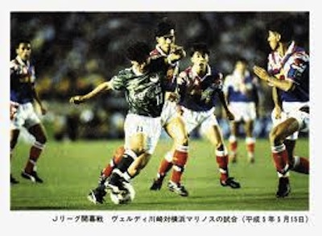
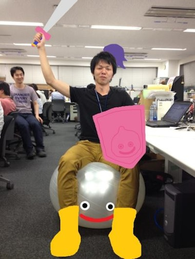
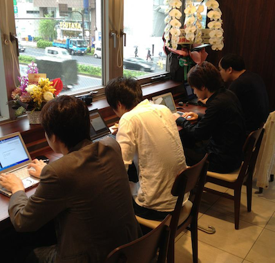

Born on December 10, 1985
Father — Koichiro Yokomine
Mother — Michiko Yokomine
Hometown — Kobe-shi, Hyogo, Japan.
Started school at 小寺小学校
kobe, Hyogo 1992
カズのユニフォームで登校してました。
今でもカズのファンです。

フォアグラのステーキうますぎ(ﾟ∀ﾟ)ｷﾀｺﾚ!!
もう味忘れました。。＼(^o^)／
Started school at 太山寺中学校
kobe, Hyogo 1998
OK ! Lock'on Roll !!
部活とFFの日々でした。
セフィロスとヴィンセントが好きです。
Started school at 星陵高等学校
kobe, Hyogo 2001
部活（サッカー）、チャンピオンズリーグ（WOWOW）、ウイイレの日々でした。
ヨーロッパのサッカーにハマった時期です。ビルバオが熱いです。
この頃からMJファンです。
「smooth criminal」が好きです。PVだいたい好きです。
全シリーズ見ました。もっかい見たいです。
CTUみたいなオフィスがいいですね！
Started school at 神戸大学
kobe, Hyogo 2006
ビクトリアシークレットの話をする下りですね。
ここでゴールデン・ゲート・ブリッジのことを知って見に行きました。
いろいろなきっかけ、出会いを与えてくれました。

優秀な仲間、先輩たちとかなり密な時間を過ごしました。
Started work at GaiaX
kobe, Hyogo 2012
反響すごかったです。。ｗ
目指せ体幹系企業！

朝7:50から熱くプログラミングしてます！

Finish self introduction!!
There is no shortcuts ! !
ここでゴールデン・ゲート・ブリッジのことを知って見に行きました。